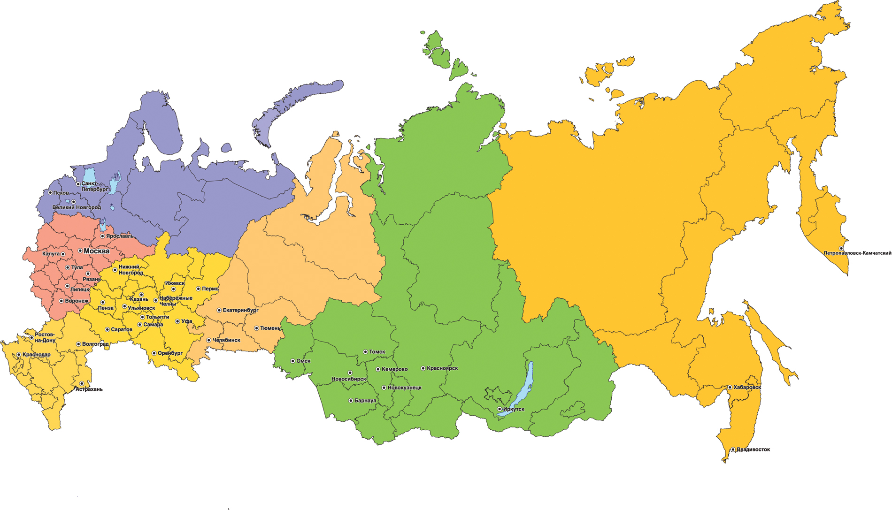

About me
Geography |
Was born in Moscow. I live in the near Moscow region (Lyubertsy, rather even Zhulebino). work in Moscow. Have a good attitude about moving. Worked in Tatarstan for five years (managed a large project). To be honest, I like Kazan from the point of view of life even more than Moscow. |
Study |
All as many. High school in Soviet times. I didn't pursue my grades, but I finished well, with an average score of 4.5. In parallel, he graduated from the physics and mathematics school at one of the leading Universities. After school, he entered the military school of communications, which he graduated with honors. This gave him basic technical knowledge in the field of telecommunications and it, which he later developed. Then the service, while serving, he graduated from the law Institute with a degree in Civil law. I didn't become a lawyer, but the training helped me in my future work, especially when I managed projects and companies, and I needed to be able to work with legislation. When I didn't have enough knowledge of project and company management, I entered the MBA (information management). Successfully complete. The rest is courses and retraining, but this is a separate conversation. I am constantly asked why I do not write about additional degrees in my resume. I don't see the point. I was not a lawyer and I have no experience in legal work. MBA? Here I agree with one of my teachers in the MBA-the diploma does not give anything, the same disciplines can be taken independently in separate courses. The main skill is to apply the acquired knowledge. After these words, I began to choose my own courses and simply improve my skills in those issues in which I did not have enough knowledge. |
Work
|
I've been thinking about it recently. If you don't count my military service, I've already been working for 21 years. During this time, I was a leading specialist in project management, sales Manager, Director of the product Department, Director of business development, commercial Director, General Director of both the company and the group of companies. Like everyone else, there were UPS and downs. But if you evaluate the entire path, it was managing projects, small and large, commissioned and created from scratch by yourself. Even though probably like everyone else, not all projects were successful, but all of them were interesting in one way or another. And now all I do is interesting new directions and projects. In any case, both past and existing projects have taught me a lot. |
Family |
The family is sacred. Beautiful wife, two boys. Although they are already boys. One is already working, the other has finished school and is preparing to enter the Institute. But, despite this, they are still my boys for me. Apartment, cottage. A great desire to finally earn enough money and move to your own house in the country, in nature. Until it turns out, then unsuccessful investments in business, then I help my parents (this is also sacred), then I need to raise my sons. But I still strive to make this dream of my own home come true, and then you can dream of something else. |